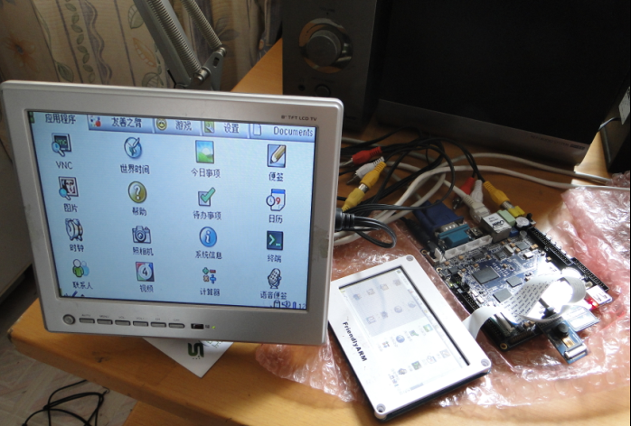

What I want is:
# try to effect TV-Encoder w4 0x76200000, 1 # yes, it works! see figure 1.1 w4 0x76200038, 0x70949030 # controls the window size and position w4 0x76200034, 0x00000003 # background : black bright=3 see figure 1.2 # see 0x7620034 value mean in figure 1.3, so you can control the position # see how to close background w4 0x7620007c, 0x00000000 w4 0x7620007c, 0x00000001Figure 1.3